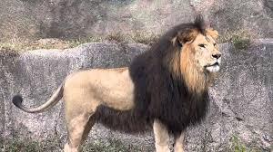

The lion is the second largest member of the Panthera genus, after the tiger. Lions can be found across the savannahs of Africa and in parts of India. Their muscular bodies can reach up to 3 meters in length. Lions have short, rounded heads with round ears, and their tails end in a dark hairy tuft. Lions are sexually dimorphic: males have a prominent mane and are larger than females. Lions typically live in groups called prides.
Let's see how lions roar.
Lion Roar Lion GrowlThere are six subspecies of lions:
Among these, the Barbary lion is considered the largest lion subspecies.
Here's a video showcasing some of the Lion subspecies:
| Image | Name of the Subspecies | Living Area |
|---|---|---|
| Congo Lion (Northeast Congo Lion) (Panthera leo persica) | Grasslands and open scrublands of Congo, Uganda | |
|  | Barbary Lion (Panthera leo leo) | North Africa (Morocco, Egypt) |
| West African Lion (Panthera leo senegalensis) | Senegal, Nigeria, Mali, Guinea | |
| Katanga Lion (Southwest African Lion) (Panthera leo bleyenberghi) | Angola, Botswana, Democratic Republic of the Congo, Malawi, Mozambique, Namibia, South Africa, Swaziland, Zambia, Zimbabwe | |
| Transvaal Lion (Southeastern Lion) (Panthera leo krugeri) | Namibia, Mozambique, South Africa | |
| Asiatic Lion (Panthera leo persica) | Gir Forest, India |
The following map represents habitat of lions.
Majority of lions live in Africa. We can find lions from:
.JPG)
There are about 130 lions live in this national park.
Queen Elizabeth National Park is one of Uganda's most famous national parks, known for its diverse wildlife and stunning landscapes. It's home to a variety of animals, including lions, elephants, buffaloes, leopards, and hippopotamuses. The park also offers breathtaking views of the Kazinga Channel, a scenic waterway that connects Lake George and Lake Edward.
Find more.JPG)
There are nearly from 500 - 700 lions live in this national park.
Hwange National Park is one of Zimbabwe's largest and most popular national parks, renowned for its diverse wildlife and stunning landscapes. It's home to a variety of animals, including elephants, lions, buffaloes, leopards, and giraffes. The park also offers breathtaking views of the Zambezi River.
Find more.JPG)
There are 1500 lions live in this national park.
Kruger National Park is one of South Africa's most famous and popular national parks, renowned for its diverse wildlife and stunning landscapes. It's home to a variety of animals, including elephants, lions, buffaloes, leopards, and rhinoceroses. The park also offers breathtaking views of the Sabie River and the Drakensberg Mountains.
Find moreThere are over 10,000 lions live in this national park.
Ruaha National Park is one of Tanzania's largest and most remote national parks, known for its diverse wildlife and stunning landscapes. It's home to a variety of animals, including elephants, lions, buffaloes, leopards, and giraffes. The park also offers breathtaking views of the Great Ruaha River.
Find more.JPG)
There are approximately 850 - 900 lions live in this national park.
Masai Mara National Reserve is one of Kenya's most famous and popular national parks, renowned for its annual Great Migration of wildebeest and zebras. The reserve is also home to a variety of other animals, including lions, elephants, buffaloes, leopards, and giraffes.
Find more.JPG)
There are approximately 3000 - 4000 lions live in this national park.
Serengeti National Park is one of Tanzania's most famous and popular national parks, renowned for its annual Great Migration of wildebeest and zebras. The park is also home to a variety of other animals, including lions, elephants, buffaloes, leopards, and giraffes.
Find moreThere are nearly 600 lions live in Gir national park in India.
Gir National Park is a renowned wildlife sanctuary located in the Gujarat state of India. It's famous for its Asiatic lion population, which is one of the last surviving populations of this endangered species.
Find moreDo you need more clarification?